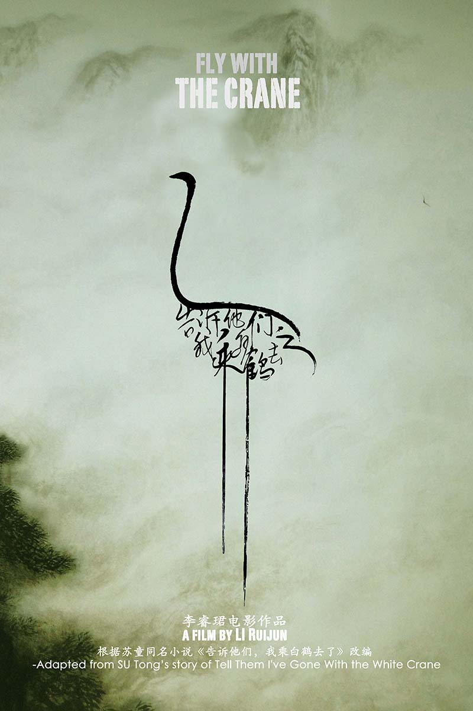
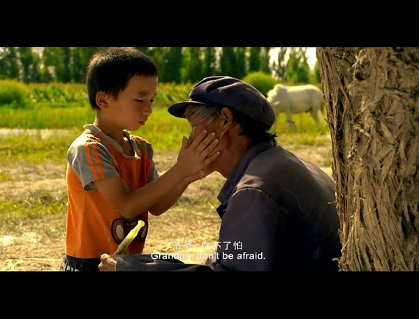

仙鹤是一种吉祥的鸟儿，老马蘸着白色的颜料一笔一笔描摹它们的样子，拓到大红的棺木上。
老马七十了，大半辈子都在给棺材作画，眼看着他连提笔都手抖，大概画完手头的这方棺材就要退休了。在镜头由牌桌到麦草垛间几次平移过后，交代了退休的老马和村里其他老头每天过的生活：围聚在村头打牌、晒太阳、聊天。农村生活和退休生活都是“缓慢”的代名词，这种“缓慢”看似乏味却充满色彩：大红的棺椁、金黄的麦草、青翠的树木，这偏远山村中的人与景组合成一首美丽的诗篇。但在这诗意般生活的背后却是一个与之完全相反的残酷现实——死亡。
按古人的想法，老人能活过七十岁是赚了上帝老天爷的寿数，即便死了要下葬也该是喜葬，没什么好难过的。农村里这些老头个个深谙其道，谁都不惧怕死亡。但同时他们也传承了古人思维的局限，年过七十死亡不可怕，可怕的是死无全尸。

老马画的最后一幅棺材用在了好友老曹的身上。老曹去世之后，老马去槽子湖边的土坟祭奠他，准备离开的时候，老马看到了一种鸟儿。这种鸟儿是一种吉祥的鸟儿，老马会画。它们是从天上飞来的？还是从老曹的棺材上飞出来的？它们是专程来槽子湖吃水的？还是来接老曹上天的？它们会不会也把我驮到天上去？在黄沙碧水中出现的白鹤给了老马无限的憧憬，当老马眼睁睁看着老曹的土坟被火葬场的人刨开之后，这种憧憬则成为了老马临死前无与伦比的渴望。要是可以不被火化而是被白鹤驮到天上去该有多好。
农民老马辛勤劳作一辈子，最大的心愿就是能够尘归尘、土归土，而“乘白鹤去了”这样一种说辞从字面上看来与他的心愿极为矛盾。白鹤远居在天之外，人们硬要将其画在棺木上埋到土里去，这种反其道而行之的偏执体现的是农民对于土地的热爱。对于这些和黄土打了一辈子交道的庄稼汉而言，土地里就是天堂，就是会乘着白鹤飞去的地方。
“去了”这个字眼很是有趣，它在汉语中可以表达离去的意思，也可以表达去世的意思。而驾鹤西归也是关于死亡的委婉的说法。影片的名字已然暗示了它在讲述一个关于死亡的故事，白鹤像是时钟上的指针，每出现一次就意味着老马的死亡倒计时又进了一格。无论是老马画在棺材上的白鹤、动画片《大闹天宫》中的白鹤还是家中座椅背上的白鹤都仅仅作为一种吉祥的象征出现，白鹤第一次也是唯一的一次在影片中正面出现则是在槽子湖边，但却是老马看到的幻象。真实出现的假白鹤和出现在假象中的真白鹤无一没有暗示老马的心愿只能是镜花水月，除了孙子以外没有人理解他也没有人愿意帮助他。在落日余晖下只有孙子能听到那些惆怅的絮语，“我辛辛苦苦把你爸你姑姑养大，可他们却要把我变成一股烟”、“我不要被拉到西关火葬场”、“我不想变成一股烟”。

老马的生命和落日一样逐渐西斜，他仿佛返老还童一般不停地做出一些幼稚的行为，让人啼笑皆非。为了保护心中白鹤的栖息地，也为了能让自己死后可以安息在土地里，老马在槽子湖给自己画了一个圈，那架势十足像是保护唐僧的孙悟空。孙悟空为唐僧画的圈子在唐僧出走之后不攻自破，老马的圈子没什么法力，黄土也不会自己跑出来，只能是被人为地破坏掉。因为季节交替，村子里以老马的儿子为代表的诸多中年人按照往年的惯例去槽子湖割芦苇以应对即将到来的寒冬，却阴错阳差地成了破坏老马归宿地的“妖怪”。割湖的场景是整部影片最高潮的部分，清粼粼的水、青中泛黄的芦苇还有满载而归的庄稼汉们，由景到人拉出的长镜头中让人不禁产生了一种错觉，这究竟是粗犷的塞外高原还是细腻的江南水乡？如果时光倒退二十年，老马也是其中的一份子，但现在他却上窜下跳着撵人不要割湖，与其他人成为了鲜明的对比。用老马儿子的话说，老马是人越大越活回去了，直接从耄耋老叟退回了幼稚顽童。幼稚的老马将槽子湖中的鸭子视作白鹤的化身，坚决不让儿子去捉；在儿子将鸭子捉回家要宰杀时，将鸭子视作玩伴的孙子却嚎啕大哭。爷孙俩的形象在这一刻完全重叠，鸭子成为了两人之间心心相系的纽带。
儿子、女儿、外孙女都是爱老马的，却唯有孙子与老马心意相通。因为怕变成一股烟而塞住家里烟囱的老马和看到孙悟空被压在五指山下嚎啕大哭的孙子，一个返璞归真，一个稚气未脱，两人的纯真简直如出一辙。正因如此，也只有孙子才会一天天地陪着老马在湖边等白鹤的到来，也只有孙子才会对老马说出“爷爷我挖个坑把你埋了吧”这样的话。生于黄土地，长于黄土地，到死还能够安睡在黄土地中，如此圆满的一个生命轮回甚合老马的心意。黄土地是老马心中最极乐的净土，歌者都禁不住为他们的融合唱诵往生咒，随着乐音响起，老马颤颤巍巍地迈入了孙子为他挖的土坑中。
生命是个圈，当摄像机绕着老马转满了一轮，黄土堆满，故事也就结束了。老马啊老马，黄泉路上你有没有碰到老曹？牛头马面他们对你好不好？阎王爷又要把你投入哪一道轮回？我们都看不到了。我们能看到的，只有一片洁白的羽毛静静飘落。《白鹤》第一次在杭州进行放映时，映后交流有一名六岁的小男孩拿到了话筒，他支吾了半天后问道：“那个老爷爷是真的坐上白鹤飞走了吗？”导演特别肯定地回答：“是的，他真的坐上白鹤飞走了。”